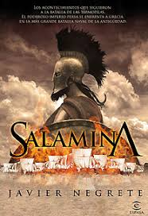

Salamina – Javier Negrete
|
Sinópsis: Los persas declaran la guerra a los estados griegos en el año 480 a.c., el emperador Jerjes, hijo del gran Darío es quien comanda a los persas, y a pesar de la fuerza e inteligencia de éste, los griegos no se rinden. El general Temistocles, demócrata convencido, comanda la flota que luchará en el estrecho entre Salamina y Atenas para frenar los planes expansionistas de Jerjes, el temible emperador persa que aspira a dominar todo Oriente. La flota que crea Temístocles, formada por bravos soldados atenienses y espartanos, derrota al enemigo, muy superior en número, tras una jornada de lucha descarnada. La astucia de la guerrera Artemisia y su traición a Jerjes serán cruciales en la batalla final. |
 |